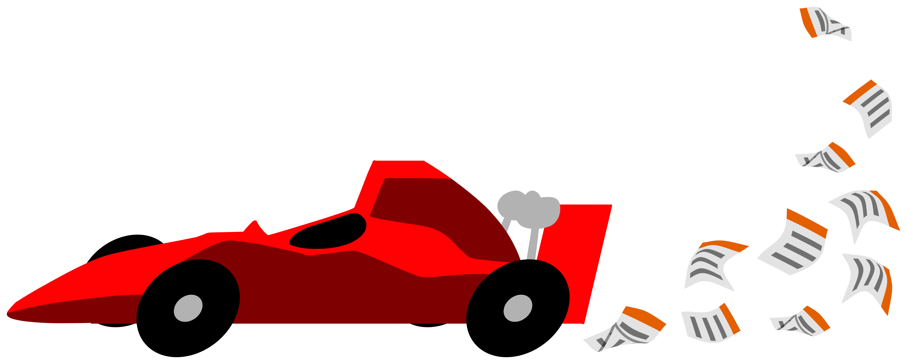

<nz-header nz-row class="encabezado">
    <a routerLink="/proyectos">
        
    </a>
    <nz-input-group
        nz-col
        nzSpan="3"
        [nzSuffix]="suffixIconSearch"
        class="buscador">
        <input type="text" nz-input placeholder="Ingresa la búsqueda" />
    </nz-input-group>
    <ng-template #suffixIconSearch>
        <span nz-icon nzType="search" class="header-icon"></span>
    </ng-template>
    <div class="derecha">
        <span
            nz-icon
            nzType="bell"
            nzTheme="outline"
            class="header-icon"></span>
        <ng-container *ngIf="!showPlaceholderUsuario; else icono">
            <!-- Mostrar la imagen si la URL de la imagen está presente -->
            
        </ng-container>

        <ng-template #icono>
            <div
                class="usuario-icono-container"
                nz-dropdown
                [nzDropdownMenu]="menu">
                <span class="usuario-icono" nz-icon nzType="user"></span>
            </div>
        </ng-template>
    </div>

    <nz-dropdown-menu #menu="nzDropdownMenu">
        <ul nz-menu nzSelectable>
            <li nz-menu-item (click)="abrirModalEditarPerfil()">
                <span
                    nz-icon
                    nzType="edit"
                    nzTheme="outline"
                    class="icono-opcion"></span>
                Editar perfil
            </li>
            <li nz-menu-item nzDanger>
                <span
                    nz-icon
                    nzType="logout"
                    nzTheme="outline"
                    class="icono-opcion"></span>
                Cerrar sesión
            </li>
        </ul>
    </nz-dropdown-menu>
</nz-header>
